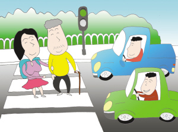
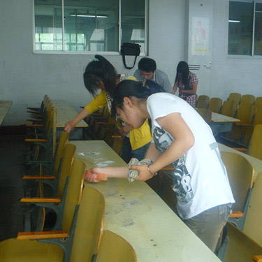

文明礼貌

社会公共生活中人与人之间应该和谐相处，举止文明以礼相待。自觉杜绝说脏话、随便猜疑、欺骗他人等恶习。这是处世做人最起码的要求。社会公德作为人类社会生活中最起码、最简单的行为准则，是和广大人民群众的切身利益密切相关的，是适应社会和人的需要而产生的。它对人们的社会生活具有特殊且广泛的社会作用。每个社会成员都应该自觉遵守社会公德。
遵守社会公德是维护社会公共生活正常秩序的必要条件。社会公德是维护公共场所正常秩序和安定环境、维护现实社会生活的最低准则，是人们现实社会生活稳定发展的基本条件。
助人为乐
助人为乐，见义勇为是社会成员在公共生活交往中用以调整相互关系的最一般的行为规范之一。在公共生活中，人与人之间应该团结友爱，相互关心，相互帮助。爱人者人恒爱之，信人者人恒信之。现实生活中不可能人人都时时快乐、事事顺心，难免会遇到这样和那样的困难和问题，总有需要人帮助、救济的时候。这就需要人们之间互相帮助，扶危济困，乐善好施，以助人为乐。对不法行为，每个公民都应当分清是非，挺身而出，智斗勇斗，见义勇为，都有责任和义务自觉维扩社会治安。
爱护公务

爱护公共财物是社会公德极其重要的内容。尤其在公共场合更要注意这一点。要爱护国家及公共财产不受侵犯。因此我们要遵守社会公德，社会公德是成为一个有道德的人的最基本要求。社会公德发挥着维护现实的稳定、公道，在社会生产和生活中起着强大的舆论监督作用和精神感召作用。社会公德的这种作用体现在：一方面肯定、维护和促进一切有利于或有助于社会和个人生存、发展和完善的思想和行为；另一方面否定、抑制和阻止一切有碍于或有害于社会和个人生存、发展和完善的思想和行为。这主要是通过社会公德的规范方式来促进社会和个人弃恶扬善，扶正祛邪，从而指导人们的思想和行为，非强制性地调节和规范着社会生活中人们的言论和行动，维护社会公共生活秩序，宥效地为满足社会与社会成员的需要服务。
环境保护
为了保持社会公共生活的环境整洁、舒适和干净，保障社会成员的身体健康，每个公民都应当讲究公共卫生、保护生活环境，这也是社会公共生活中人们应当遵循的最基本的行为规范。讲究公共卫生，造成优美环境，是人身心健康的重要保证；因此我们要遵守社会公德，它是社会风尚的一个重要方面，体现出一个民族的文明程度和精神面貌。社会公德建设是精神文明建设的基础性工程，也是精神文明程度的“窗口”。社会公德是社会道德的基石和支柱之一，社会公德对社会道德风尚的影响稳定而深刻、广泛而持久。社会道德又是社会精神文明的重要组成部分，所以从人们实践社会公德的自觉程度和普及程度，可以看出整个社会精神文明建设的状况。
遵纪守法
法律是对公民行为的必要约束及规范，是对道德的补充。自觉遵守法律法规、纪律，是社会公德最基本的要求。公共生活中人们要能顺利地进行社会活动，就必须要有规矩可循，就必须遵循一定的行为规范。每个社会成员既要遵守国家颁布的有关法律、法规，也要遵守特定公共场所的有关规定。人们只有依照法律、法规也保障自己所要从事的某项活动；才不会绐社会和他人造成损失和伤害并保证社会的健康发展。遵纪守法反映了人们的共同要求，体现了人们共同的利益。每个社会成员都应自觉提高法律意识、增强法纪观念，自觉用法纪来指导和约束自己的行为，自觉履行法纪规定的义务，敢于并善于运用法律武器同各种违法乱纪现象作斗争，并能正确运用法纪手段保护自己的合法权益不受侵犯，真正做到知纪懂法，遵纪守法。